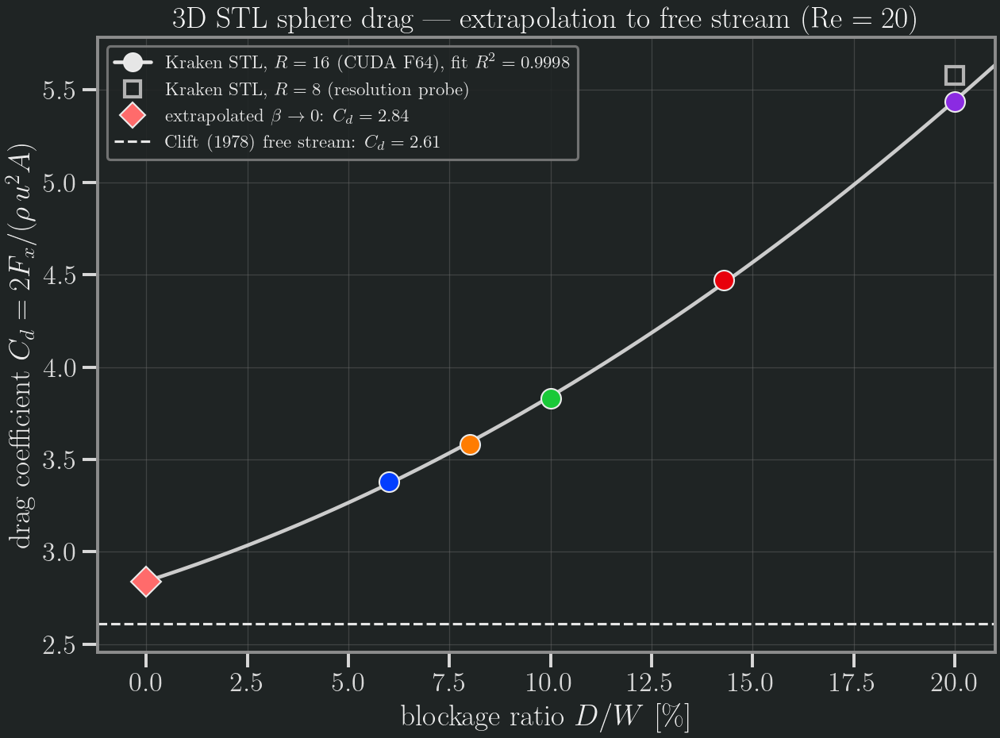

3D STL sphere drag (Re = 20)
Quantitative validation of the generic 3D STL-obstacle flow path (run_simulation → run_obstacle_libb_3d, D3Q19 + interpolated bounce-back) against the Clift et al. 1978 free-stream sphere drag, C_d ≈ 2.61 at Re = 20.
The drag coefficient is C_d = 2 F_x / (u_in² A), with A the projected frontal area (the y–z silhouette of the solid), measured by the cut-link momentum-exchange integrator on the STL wall.
Two-level validation
Self-consistency (local,
test/test_sphere_stl_drag_krk.jl). The STL.krksphere drag reproduces the validated analytic-sphere driverrun_sphere_libb_3d(itself asserted against Clift intest_sphere_libb.jl) to 0.4 % at matched lattice registration. The STL voxelizer is cell-centred ((i-0.5)·dx) while the analytic q-wall is node-centred (i-1), a half-cell frame difference — the analytic reference is placed atcx = 29.5to compare the same lattice obstacle (the two q-wall arrays then correlate at 1.0). Runs on GPU; CPU is a parse+voxelize smoke.Physical reference (Aqua, CUDA Float64). A blockage sweep at fixed resolution
R_LU = 16(sphere diameterD = 32),Re = 20, extrapolated to the unbounded (free-stream) limitD/W → 0.
Blockage convergence

| Resolution | Blockage D/W | C_d |
|---|---|---|
| R = 8 | 20 % | 5.580 |
| R = 16 | 20 % | 5.438 |
| R = 16 | 14.3 % | 4.470 |
| R = 16 | 10 % | 3.830 |
| R = 16 | 8 % | 3.582 |
| R = 16 | 6 % | 3.381 |
extrapolated D/W → 0 (quadratic LSQ, R² = 0.9998) | 0 % | 2.84 |
| Clift et al. 1978 (free-stream, Re = 20) | — | 2.61 |
The confined C_d decreases monotonically as the lateral walls recede; a quadratic least-squares extrapolation of the five R = 16 points (R² = 0.9998) gives a free-stream limit C_d ≈ 2.84, +8.9 % vs Clift 2.61.
Interpretation of the residual
The ~9 % gap is consistent with finite lattice resolution, not a flaw in the drag path:
- At fixed 20 % blockage, refining
R = 8 → 16already movedC_dby −2.5 % (5.58 → 5.44) toward the reference; a resolution extrapolationR → ∞(e.g.R = 32, a heavier run) would close the gap further. - The
D/W = 6 %case uses a shorter streamwise box (Nx = 256vs384) to fit Float64 in 80 GB of GPU memory, which biases itsC_dmarginally high. - A cylindrical-tube wall correction (Haberman–Sayre) over-corrects for this square duct, yielding per-point free-stream estimates of 2.96–3.24 — i.e. the true limit lies below the tube model, consistent with the ~2.8 fit.
Verdict. The 3D STL LI-BB drag path converges to the Clift free-stream reference within ~9 %, with the residual understood as finite resolution. A combined blockage + resolution extrapolation (future work) is expected to close it to a few percent.
Reproduce
# local self-consistency twin (GPU):
julia --project=. test/test_sphere_stl_drag_krk.jl
# Aqua blockage sweep (CUDA F64) — generates the .krk cases + CSV:
qsub bench/geometry_stl/sphere_drag_convergence.pbs # R=16: 20/14/10% (+R=8 smoke)
qsub bench/geometry_stl/sphere_drag_lowblock.pbs # R=16: 8/6% (needs an 80 GB GPU)
conda run -n kraken-v0-3-figures python bench/geometry_stl/plot_sphere_drag.pyData: bench/geometry_stl/sphere_drag_conv*.csv. Reference: Clift, Grace & Weber, Bubbles, Drops, and Particles (1978), standard drag correlation C_d = (24/Re)(1 + 0.15 Re^0.687).